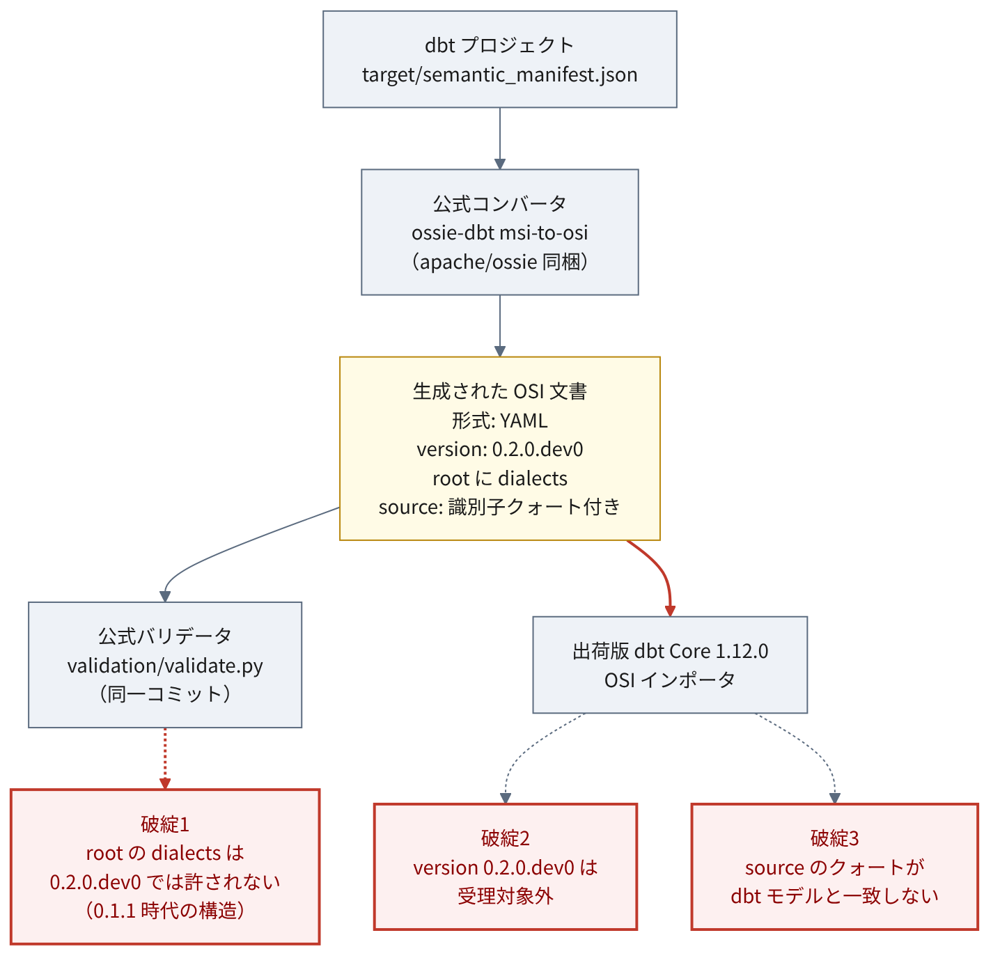
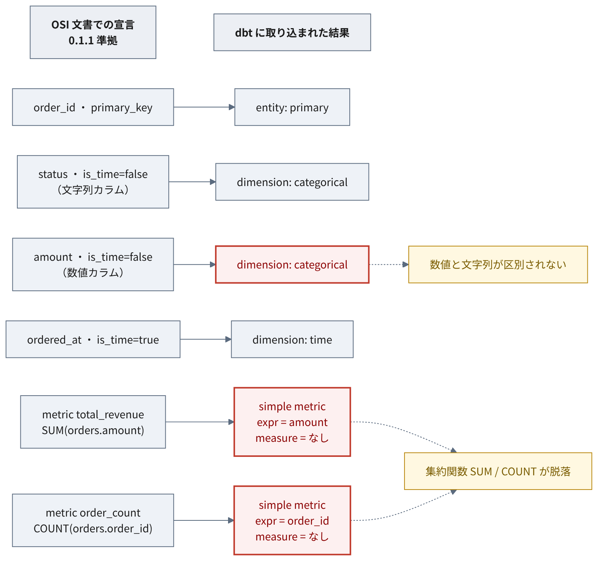

7 動作確認
ここまでは文書の読解である。本章は実際に動かした結果を扱う。
本章の観測はすべて再現可能である。検証スクリプトと実行環境は ossie-playground のルートにあり、 make verify で追試できる（付録 B）。 実行結果の生データはリポジトリの docs/results/track_a.json / track_b.json に出力される。 検証項目ごとの主張と反証条件は本章で順に示す。
固定の粒度には強弱がある。仕様リポジトリはコミット（07be0176）で固定し、 消費側の dbt-core / dbt-duckdb は == で厳密に固定している。 一方でベースイメージ（python:3.12-slim）はダイジェスト固定しておらず、 一部の依存はバージョン下限（>=）指定で、完全なロックファイルは用意していない。 したがって再ビルドの時期によっては下位依存の版が動きうる。 この固定の限界と、正確な指定（docker/Dockerfile・docker/requirements.txt・ Makefile の OSSIE_COMMIT）は 付録 B に記す。
7.1 検証の設計
7.1.1 なぜ2トラックに分けたか
チャプター 2 で述べたとおり、0.1.1 と 0.2.0.dev0 は 揃っているツールチェーンが異なる。同じ手順を両方に適用することはできない。
| 0.1.1 | 0.2.0.dev0 | |
|---|---|---|
| 公式スキーマ | あり（タグ osi-0.1.1-rc1） |
あり（main） |
| 公式サンプル | なし | 2本 |
converters/ 8本 |
対象外 | 全8本がこちら |
| 出荷版 dbt Core 1.12 | 受理 | 拒否 |
そこで2つの経路をそれぞれ別に検証した。
トラックA（0.1.1） — 手書きの準拠文書 → 公式バリデータ → dbt 取り込み → dbt run。 本検証の2トラックの中で、端から端まで通せた唯一の経路である （他のコンバータや osi-to-msi 方向、dbt Fusion 等は検証していない）。 公式サンプルが存在しないため入力は自作せざるを得ない。
トラックB（0.2.0.dev0） — 公式コンバータで dbt から生成 → 公式バリデータ → dbt 取り込み。 生成側の経路。
7.1.2 運用ルール
検証計画を先に固定し、 各項目について主張・手順・裏付けとなる観測・反証となる観測を事前に書いた。
特に重要なルールが1つある。 投入する文書はすべて公式バリデータを通してから実装に食わせる。
仕様に適合しない文書を実装に読ませると、実装がそれをどう扱おうと 「実装の性質」としては解釈できない。仕様準拠を先に保証しておかないと、 観測されたものが仕様由来か実装由来かを切り分けられなくなる。
7.1.3 環境
| 項目 | 値 |
|---|---|
| 仕様 | apache/ossie @ 07be0176 / 比較タグ osi-0.1.1-rc1 |
| 消費側 | dbt Core 1.12.0 / dbt-duckdb 1.10.1 / metricflow 0.211.0 |
| 実行環境 | python:3.12-slim コンテナ |
消費側の版は、dbt-core==1.12.0 を起点に依存範囲から解決された結果であり、 metricflow 0.211.0 もその解決で入った版である（明示的に固定して同梱したものではない）。
すべて Docker 上で動かし、ホストには何も入れていない。 必要なのは docker だけである。再現手順は 付録 B。
本章の結果は、いずれも固定コミット 07be0176（2026-07-17）に対するものである。 その後の 2026-07-20、main には複数のコミット （0.2.0.dev0 のスナップショットファイル追加、Snowflake のクォート付き識別子対応 #233 ほか）が入っている。 これらが後述の往復問題（セクション 7.3）を解消したかどうかは未確認であり、 本章の観測には反映していない。
検証を走らせるコンテナは、Docker の設定（network_mode: none）で 外部と通信できない状態にしてある。実行中にパッケージを取りに行ったり、 仕様リポジトリを引き直したりできない。
理由は結果の再現性である。実行のたびに外部から何かを取得していると、 上流が変わった瞬間に結果が変わり、しかもそれに気づけない。 通信を断てば、結果を左右するのは 固定したコミット（07be0176）とコンテナイメージだけになる。
外部を使うのは事前準備の一度だけで、仕様リポジトリを 固定コミットで取得する make spec がそれにあたる。 以降の make verify は取得済みのものだけを見る。
副次的な効果として、dbt が起動時に最新版を確認しようとして失敗する （The latest version of dbt-core could not be determined!）。 これは切り離しが効いていることの確認にもなる。
7.2 結果の概要
検証は6項目。各項目は「こうなっているはずだ」という主張を先に立て、 それが観測で裏付けられるか、あるいは覆されるかを見る形で設計した。
| 項目 | 何を確かめたか | 結果 |
|---|---|---|
| V1 | 構造が同じ文書でも、バージョン文字列の違いだけで相互に受け付けられなくなるか | 裏付けられた。加えて別の要因も判明 |
| V2 | 実装は、公式スキーマが禁じている書き方を受け入れてしまうか | 裏付けられた。警告も出ない |
| V3 | 型情報を持たないディメンションを、実装はどう解釈するか | 数値と文字列が区別されなかった |
| V4 | メトリクスの集約式は、実装のモデルへどう写像されるか | 集約関数が脱落。実行しての確認はできなかった |
| V5 | 仕様に書かれていない前提が、取り込みに必要になるか | 3件必要だった |
| V6 | 公式コンバータの出力を、出荷版の実装は受け取れるか | 受け取れない。想定していなかった要因が2つあった |
全体として、主張はおおむね裏付けられた。ただし V4 は実行環境の制約で 最後まで確認できず、V6 は事前に想定していたのと別の理由でも失敗した。 以下、順に見ていく。
7.3 本検証構成では dbt を挟んだ往復が成立しない
本章で最も紙幅を割く結果である。
仕様リポジトリ同梱の公式コンバータ（ossie-dbt msi-to-osi）で dbt プロジェクトから OSI 文書を生成し、同じ dbt に戻せるかを試した。 以下は固定コミット 07be0176・dbt-core 1.12.0・本検証の入力に対する観測であり、 製品やアダプタ、現行 main を横断する一般命題ではない。

この構成では、少なくとも3つの要因が重なって往復が成立しなかった。 以下の3つはそれぞれ別の層で起きており、いずれか1つを直しても残りで止まる。
7.3.1 破綻1: 公式コンバータの出力が、同一コミットの公式スキーマで落ちる
[Schema] (root): Additional properties are not allowed ('dialects' was unexpected)コンバータはルート直下に dialects: ["ANSI_SQL"] を出力する。 これは 0.1.1 のルート構造であり、0.2.0.dev0 では削除されている（セクション 4.6）。
にもかかわらずコンバータは version: "0.2.0.dev0" を出力する （converters/dbt/src/ossie_dbt/msi_to_osi.py L124 のハードコード。 tests/test_msi_to_osi.py でもこの値がアサートされている）。
つまりコンバータの出力は、ルート構造は 0.1.1 のまま、version 文字列だけ 0.2.0.dev0 という 組み合わせになっている。この文書は、同一コミットの公式バリデータ（0.2.0.dev0 スキーマ）を通らない。
7.3.2 破綻2: バージョン文字列で拒否される
OSI file '...' uses unsupported version '0.2.0.dev0'.
Supported versions: ['0.1.0', '0.1.1']dbt 側の受理集合は、インストールされた dbt/constants.py に SUPPORTED_OSI_VERSIONS = frozenset({"0.1.0", "0.1.1"}) として定義されている （dbt-core 1.12.0。検証環境内で確認）。 この制約は dbt のドキュメントにも “OSI documents must use version 0.1.0 or 0.1.1” （OSI 文書はバージョン 0.1.0 または 0.1.1 を用いなければならない）と明記されている。
7.3.3 破綻3: source の形式が一致しない
バージョンを 0.1.1 に書き換えると 0.1.1 スキーマは通過する。 しかし dbt はなお拒否する。
contains dataset 'orders' ("ossie_track_a"."main"."orders") that does not match
any dbt model in this project.コンバータは source を '"db"."schema"."table"' と識別子をクォートして出力する。 dbt の突き合わせはクォートなしを期待する。 手書きの ossie_track_a.main.orders は問題なく通った。
仕様は source を「database.schema.table 形式または query」としか定めておらず、 クォートの扱いを規定していない（チャプター 4）。
エラーメッセージの ("ossie_track_a"."main"."orders") という表記と、 クォートなしの手書き文書が通ったことから、クォートの有無が拒否の要因である可能性が高い。 ただし本検証はクォート以外の差分を厳密に統制したうえでの一点比較ではないため、 これは原因の確定ではなく有力な観測として扱う。
7.3.4 帰結
この構成では、dbt → OSI → dbt の往復が成立しなかった。 3つの要因はそれぞれ別の層で起きており、どれか1つを直しても残りで止まる。 ここで言えるのはこの検証構成についてであり、製品・アダプタ・現行 main を 横断する一般命題ではない。
3つの原因はいずれも、バージョン管理・出力形式・識別子の表記といった 取り決めの層にある。メトリクスの意味をどう表現するかという 設計上の難問とは別の種類の問題である。
こうした食い違いは、仕様と実装が並行して動いている時期には起こりやすい。 バージョンを進める、スキーマを整理する、コンバータを直すという作業が それぞれ別のタイミングで行われれば、その間に齟齬が生じる。
裏を返せば、取り決めを揃えれば解消しうる種類でもある。
7.4 取り込み時に情報が落ちる
手書きの 0.1.1 準拠文書は、公式バリデータを通り、dbt に取り込まれ、 dbt run まで到達した。経路がまったく動かないわけではない。
ただし取り込みの過程で情報が落ちる。

7.4.1 型情報が運ばれない
OSI の dimension は is_time（時間軸かどうか）という真偽値しか持たない（チャプター 4）。 数値なのか文字列なのかを示す欄がない。
取り込ませた結果はこうなった。
| OSI 側の宣言 | dbt での分類 |
|---|---|
order_id（primary_key） |
entity (primary) |
status（文字列カラム、is_time=false） |
dimension: categorical |
amount（数値カラム、is_time=false） |
dimension: categorical |
ordered_at（is_time=true） |
dimension: time |
数値の amount と文字列の status が、同じ categorical になっている。
セマンティック層では、列を大きく2つの役割に分ける。
- ディメンション: 集計を「切る」ための軸。ステータス別、月別、地域別
- メジャー: 集計「される」数量。売上金額、件数
categorical（カテゴリカル）とは、 取りうる値の種類で分類するタイプのディメンションを指す。 「shipped / pending / cancelled」のようなラベルがこれにあたる。
金額である amount が categorical と解釈されると、 「金額の値ごとに行を切り分ける軸」として扱われることになる。 100.50円のグループ、250.00円のグループ、という具合である。 本来は合計したい数量なので、意図とずれる。
dbt は source を辿れば物理テーブルの列型を見に行けるが、 そこまではしていない。OSI 文書に書かれた情報だけで判断している。
型情報を運ぶ欄が仕様にない以上、消費側が物理テーブルを見に行くか、 名前から推測するしかない。どちらを期待するかも仕様は定めていない。
7.4.2 集約関数が脱落する
OSI 文書に2つのメトリクスを書いた。売上の合計と、受注の件数である。
metrics:
- name: total_revenue
expression:
dialects: [{ dialect: ANSI_SQL, expression: "SUM(orders.amount)" }]
- name: order_count
expression:
dialects: [{ dialect: ANSI_SQL, expression: "COUNT(orders.order_id)" }]取り込んだ結果がこれである。
| OSI 側の宣言 | dbt 側の結果 |
|---|---|
SUM(orders.amount) |
type=simple, expr=amount, measure=None, input_measures=[] |
COUNT(orders.order_id) |
type=simple, expr=order_id, measure=None, input_measures=[] |
SUM と COUNT が消えている。 残ったのは対象の列名（amount / order_id）だけで、 「合計する」「数える」という集約の指示が失われた。 2つのメトリクスは対象列こそ違うものの、いずれも type=simple で集約関数を持たない、 同じ骨格になっている。これは取り込み後の manifest 上での観測であり、 実行時にどう出るかは後述のとおり未確認である。
セクション 4.2 で見たとおり、Ossie と dbt/MetricFlow では 集約の置き場所が違う。
dbt/MetricFlow の考え方は、まずテーブルの中に 「amount を合計したもの」という名前付きの部品（measure）を作り、 メトリクスはその部品を指す、というものである。 メトリクスの定義は「どの部品を使うか」だけを持ち、 どう集約するかは部品の側が知っている。
Ossie の考え方は、部品を作らず、 メトリクスの式に直接 SUM(...) と書く。
そのため OSI 文書を dbt に取り込むと、 メトリクスが指すべき「部品」が存在しない。 measure=None、input_measures=[] はその状態を表している。 式から SUM を取り出して部品を組み立てる処理は行われず、 中身の列名だけが expr に残った、と読める。
これは仕様の不備というより、2つの設計が噛み合っていないことの現れである。 どちらの置き方が良いかは セクション 4.8 で議論が続いており、 結論は出ていない。
7.4.3 実行検証はできなかった
計画では「取り込んだメトリクスが実際に計算できるか」まで確認するはずだった。 出荷版ツールチェーンでは実行できない。
dbt-core1.12.0 単体にメトリクスをクエリするコマンドはない- 依存として入った
metricflow0.211.0 はライブラリのみでコンソールスクリプトを持たない - クエリ用の
dbt-metricflow（最新 0.13.0）はdbt-core<1.12.0,>=1.10.4を要求し、1.12.0 を明示的に除外している （PyPI のメタデータ、アクセス日 2026-07-19）
OSI インポートが載ったバージョンでは、その結果をローカルでクエリできない。
したがって集約関数の脱落が実行時にどう出るかは未確認であり、 マニフェスト上の観測にとどめる。
7.5 実装が公式スキーマより緩く受ける場合がある
Field は additionalProperties: false である。 Field に仕様外のキーを1つ足した文書を用意すると、次のようになった。
| 検証者 | 結果 |
|---|---|
| 公式バリデータ（0.1.1） | 拒否 |
| dbt Core 1.12.0 | 受理。この追加キーについて警告は出なかった |
寛容なパースは設計判断としてありうる。ただしこの観測は、 検証した「Field への追加キー」という一点についてのものである。
dbt は、未対応の要素を落とす際に警告（I078）を出す仕組みを持つ。 今回の追加キーではその警告が出なかった、というのがここでの観測であり、 「dbt はいかなる仕様違反も無警告で受ける」という一般化はできない。 少なくともこの追加キーに関しては、利用者が仕様違反に気づく手がかりが得られなかった。
この項目の主張と反証条件も、他と同様に事前に定めてある。
7.6 仕様が定めていない前提
OSI 文書を dbt に取り込むには、仕様に記述のない要件が3つ必要だった。
.jsonのみ走査される。 dbt は指定されたosi-paths（既定ではOSI/）配下をrglob("*.json")で探す（dbt-core 1.12.0 のdbt/parser/osi.py。検証環境内で確認）。OSI/に YAML を置いても無視され、parse は成功する（観測済み）。 複数パスの指定はできるが、依存パッケージ内に置かれた OSI 文書は走査対象にならない。 一方、本検証で用いた仕様の公式サンプルは YAML であり、 固定コミットのコンバータを CLI で実行した出力も YAML だった （コンバータが YAML のみを出すのか、他形式が既定なのかまでは未確認）- time spine モデルが要る。 メトリクスを含む文書を取り込むと、 MetricFlow が granularity DAY 以下の time spine モデルを要求する。 OSI 仕様に該当する概念はない
sourceが dbt 管理下のモデルと一致する必要がある。(database, schema, alias)で一致しなければならず、外部テーブルは参照できない
いずれも、OSI に適合しているだけでは dbt での取り込みは保証されないことを示している。 仕様の外にある消費側の事情を満たさなければ通らない。
7.7 この検証で確かめられなかったこと
- メトリクス実行時の挙動（ツールチェーン上不能）
0.1.0を消費側が受理する一方、それに対応する公式スキーマ成果物を どこで検証できるのかが判然としない。dbt は0.1.0を受理集合に含めるが、 仕様リポジトリの Version History には0.1.0の記載が見当たらない。 「消費側が受理を表明する版を、どの公式成果物で検証できるか」という 相互運用上の論点として残る- 他の7つのコンバータの出力が同様の問題を持つか（
dbtのみ検証） osi-to-msi方向。dbt 同梱のmetricflow.converters.osi_to_msiと リポジトリのossie_dbt.osi_to_msiの関係も未確認